MOLLY URBINA
I am an engineer with the mind of an artist. In September 2020, I will be working as a Mechanical Engineer for Gecko Robotics in Pittsburgh, PA. They create biology-inspired industrial inspection robots, allowing me to continue working in robotics, 3D printing, product design, and research and development. The summer will be focused on creating art, traveling abroad, and other hobbies I neglected before after graduating with a Bachelor of Science in Mechanical Engineering with a minor in Psychology in May 2020.

Career
Hobbies
Education